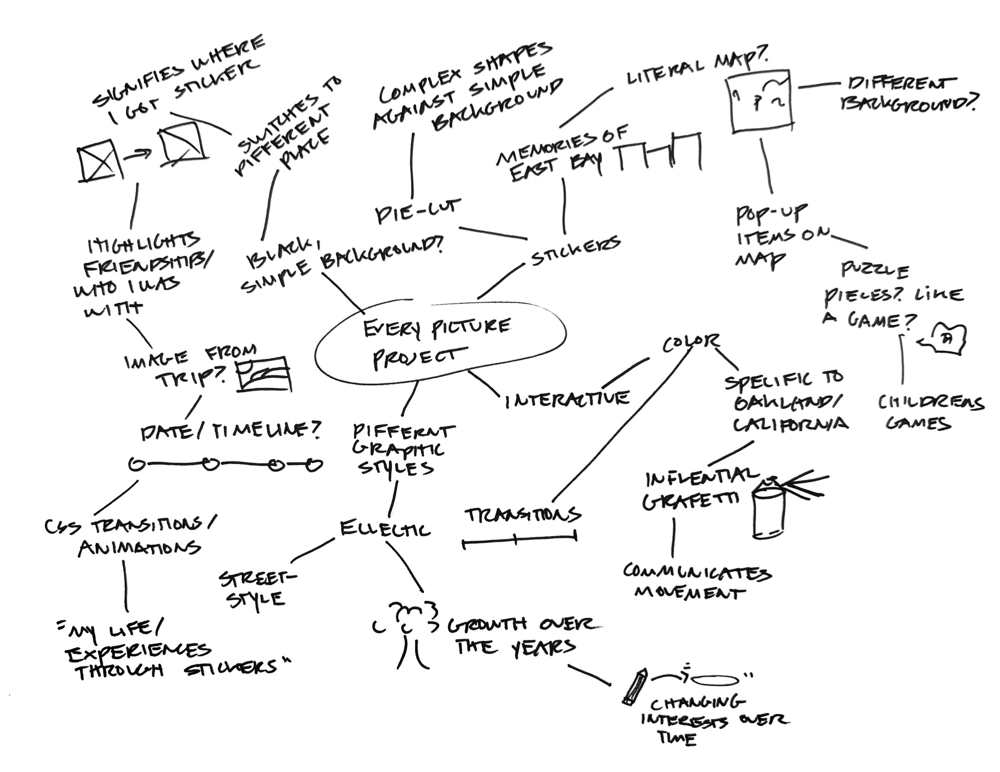

Exploring My Concept Further
Looking at my first draft, I wanted to explore ways to improve the visual design of my project. When brainstorming, I was thinking about Meredith’s feedback about making the background more engaging. I want to communicate more about the actual places I got the stickers from, and what they mean to me. One idea I have is to insert a map of California as a background and place the stickers on the map. One potential issue with this idea is that the points might be small, since I got some of my stickers from Southern California. I also want to play around with coloration and animations to make the reveal of each sticker more engaging. I think my next steps are to go back to sketching it out, and then reevaluate how I want it to be visually displayed.